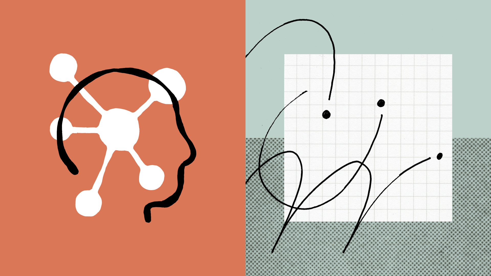
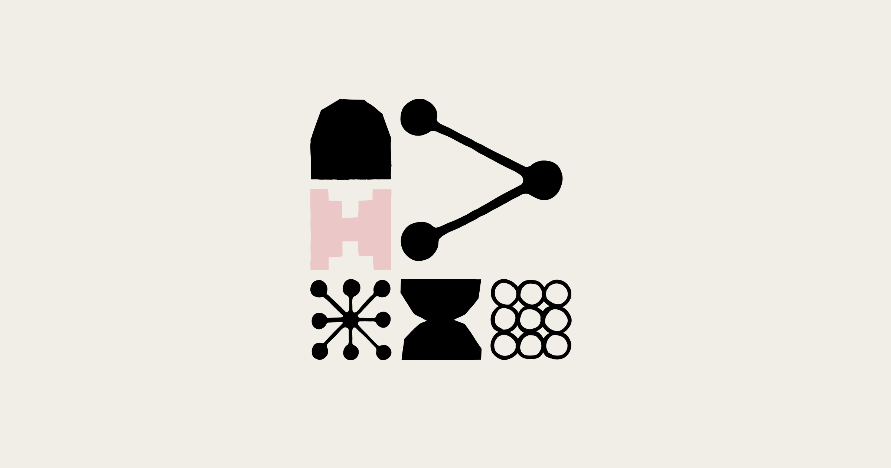

Introducing Claude Opus 4.7
Anthropic은 최신 모델인 Claude Opus 4.7을 정식으로 선보였습니다. 이 모델은 특히 고난도 소프트웨어 엔지니어링 작업에서 이전 버전보다 괄목할 만한 발전을 이루었습니다.
사용자들은 이제 면밀한 감독이 필요.
이번 주 LLM은 성능표보다 운영표가 더 중요해진 주간이었습니다.

Anthropic은 최신 모델인 Claude Opus 4.7을 정식으로 선보였습니다. 이 모델은 특히 고난도 소프트웨어 엔지니어링 작업에서 이전 버전보다 괄목할 만한 발전을 이루었습니다.
사용자들은 이제 면밀한 감독이 필요.

Anthropic은 에이전트의 교차 플랫폼 호환성을 위한 개방형 표준인 Agent Skills를 발표했습니다. 이로 인해 강력한 AI 에이전트들이 다양한 환경에서 더 유연하게 작동하며 복잡한 업무를 수행할 수 있게 됩니다.
엔진 출력표보다, 자주 타는 차에 자동변속기를 달아 놓은 쪽에 더 가깝습니다.
이미지 생성은 화질 과시보다 테스트를 얼마나 많이, 싸게 돌릴 수 있느냐가 더 큰 경쟁 포인트로 보였습니다.

Midjourney가 한 달간의 V8.0 모델 테스트를 마치고 새로운 V8.1 버전을 공개했습니다. 이번 업데이트에는 사용자 커뮤니티에서 선호했던 기능들이 다시 포함되었습니다.
현재 V8 시리즈는 alpha.midjourney.com에서 초기 테스트 단계로만 이용 가능합니다.
어도비는 파이어플라이에 새로운 크리에이티브 에이전트와 생성형 AI 기술을 접목하여, Precision Flow 및 AI Markup과 같은 정밀 이미지 편집 기능을 대폭 강화했습니다. 이러한 발전은 창작 과정의 정밀도를 높여, 아이디어를 시각화하는 방식 자체를 더욱 섬세하고 효율적으로 변화시키는 새로운 흐름을 만들어낼 것입니다.
한 번 잘 나오는 필터보다, 작업실 조명이 통째로 바뀐 느낌에 가깝습니다.
영상 생성은 거창한 신기능 발표보다 버전 전환과 기존 작업 자산을 어떻게 이어갈지가 더 크게 보인 주간이었습니다.
Apple 앱스토어의 All-in-One AI Agent는 Kling 비디오 모델 지원을 추가하며, 영상 업로드 경험과 모델 선택 기능을 대폭 향상했습니다. 이제 사용자는 더욱 간편하게 다양한 AI 비디오 모델을 선택하고 영상을 생성할 수 있게 되어, 콘텐츠 제작의 진입 장벽이 한층 낮아지는 흐름을 맞이하게 됩니다.
마치 복잡한 영상 편집실이 손안의 마법 지팡이로 변한 것과 같습니다.
Adobe의 Firefly AI Assistant는 비디오 및 이미지 편집 기능을 강화하고, Kling 3.0, Google의 Nano Banana 2, Runway Gen-4.5 등 다양한 파트너 모델을 통합하며 그 역량을 확장했습니다. 이러한 변화는 여러 AI 모델을 개별적으로 사용하던 크리에이터들이 이제 하나의 플랫폼 안에서 더욱 풍부하고 다양한 영상 및 이미지 생성 도구를 활용하게 될 흐름을 예고합니다.
짧은 티저 한 편보다 편집실 타임라인에 새 레일을 깔아준 셈입니다.
음악 생성 쪽은 이번 주에 유독 방향이 선명했습니다. 프롬프트 한 줄 받아 곡을 뽑는 데서 끝나는 게 아니라, 내 파일과 스타일을 바로 들고 들어오게 만드는 쪽으로 확실히 꺾였습니다.
Neuronad가 음악 생성에서 손이 많이 가던 구간을 줄이는 기능을 내놨습니다. 이건 데모 성능보다 개발 공정, 평가, 장기 실행 같은 진짜 실무 레이어를 두껍게 만드는 변화입니다.
새 데모 영상 하나보다, 백오피스 배선 공사를 다시 한 느낌입니다.
편집/제작 쪽은 새 버튼 하나보다 실제 반복 공정을 얼마나 덜어주느냐가 포인트입니다.
어도비는 프리미어 프로의 색 보정 기능을 완전히 새롭게 바꾸고, 파이어플라이에 클링 3.0을 확장했습니다. 프레임.io 드라이브를 선보이는 등 영상 워크플로우를 대대적으로 개선했습니다.
새 버튼 하나보다 반복 클릭을 매크로로 묶어버린 쪽에 더 가깝습니다.

Twill.ai는 개발자들이 클라우드 에이전트에게 작업을 위임할 수 있는 서비스를 출시했습니다. 이 서비스를 통해 개발자들은 완성된 풀 리퀘스트(PR)를 받아볼 수 있습니다.
이러한 접근 방식은 개발팀이 단순 반복적인 코딩 대신 고차원적인 문제 해결에 집중하도록 돕습니다.
3D 쪽은 멋진 결과물보다 후속 수정과 파이프라인 연결이 더 중요해진 흐름입니다.

Tripo는 'Tripo3D Godot Bridge'라는 경량 플러그인을 공개했습니다. 이 플러그인은 Tripo Studio에서 생성된 3D 모델을 웹 브라우저에서 곧바로 Godot 프로젝트로 실시간 전송합니다.
수동 다운로드나 가져오기 과정 없이 연동하는 기능을 제공합니다.
Tripo 쪽에서 이번 주 흐름을 보여주는 공식 업데이트가 나왔습니다. 3D 쪽 변화는 샘플 한 장보다 모델 정리, 후속 수정, 파이프라인 연결 편의성으로 드러납니다.
멋진 렌더 한 장보다, 모델링 책상 위에 손이 덜 가는 공구를 올린 셈입니다.
에이전트/자동화는 데모보다 실제로 어디까지 맡길 수 있느냐가 핵심입니다.
GitHub 쪽에서 이번 주 흐름을 보여주는 공식 업데이트가 나왔습니다. 에이전트 영역은 데모보다 실제 워크플로에 몇 단계까지 맡길 수 있느냐가 승부처입니다.
똑똑한 비서 한 명보다, 자주 하던 심부름에 전용 동선을 깔아 놓은 느낌입니다.
u/danielbilekq0가 개발한 오픈소스 AI 에이전트 플랫폼 Jean2가 새 버전을 공개했습니다. 이 플랫폼은 시스템 프롬프트, 고정된 도구, 조향 기능 등 내장된 행동 양식이 전혀 없습니다.
따라서 사용자가 에이전트의 모든 것을 직접 제어할 수 있습니다.
이번 주 이슈랑 같이 보면 맥락 잡기 좋은 영상 3개만 골랐습니다. 뉴스형 브리핑 위주로 넣었습니다.
이번 주 웹진에서 다룬 Anthropic 흐름을 같이 훑기 좋은 영상입니다.
이번 주 웹진에서 다룬 Claude, Gemini 흐름을 같이 훑기 좋은 영상입니다.

이번 주 웹진에서 다룬 Claude 흐름을 같이 훑기 좋은 영상입니다.